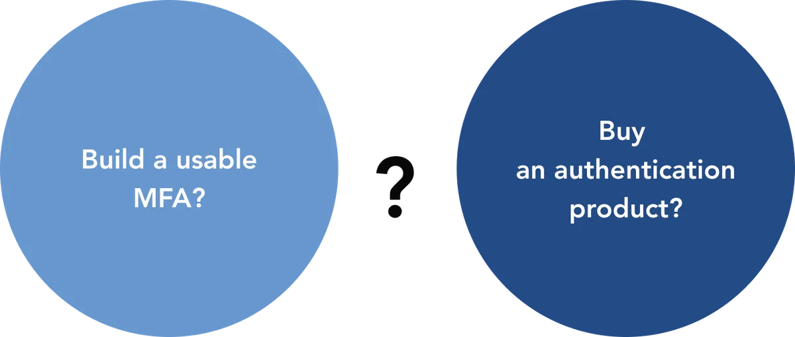

Many other developers and systems admins have chosen Keycloak because it makes it easy to secure applications and services with little to no code and because it’s an open-source Identity and Access Management platform, the price is right, too. While support and training may not be as robust as paid alternatives, leveraging the Keycloak Forum, Mailing list, and GitHub Issues for guidance and answers bridges the gap.
Federation, user management, and SSO are functioning adequately, but increasingly the situation is changing where more security is needed. Maybe this change is driven by some phishing or impersonation attacks on the organization. Maybe industry regulations are stiffening up and the logical next step is putting in a solid MFA solution. There are also those things not addressed by Keycloak like VPN access and Windows login which force users to have additional usernames and passwords. Keycloak's implementation works primarily for federation and may have limited or no native functionality for VPN or Windows login.
Keycloak with MFA or Multifactor Authentication
Keycloak’s implementation of MFA is based on TOTP (time-based OTP) and can be rolled out in a straight-forward manner or Google Authenticator can be used. In either case, the vulnerability of impersonation attacks like phishing remains.
Consideration should also be given to getting rid of passwords. Phishing attacks work primarily because users give up their credentials – in other words, their passwords. One strategy to mitigate the phishing threat is to eliminate passwords and the security risk that comes with them. In addition, passwords annoy end users due to rigorous policies requiring complexity and regular changes as well as the sheer number of passwords that they are required to create, remember, and manage.
Here are the options: build a usable MFA compatible with Keycloak, do nothing, or buy an available authentication product. Building an MFA solution is too much effort, will require you to support it going forward, and just doesn’t make sense. Buying commercial solutions can be expensive and means throwing-out all the work done implementing Keycloak.

What about using what you have but make it stronger?
What does the ideal Multi Factor Authentication solution look like?
If you want to increase your security by using MFA or going passwordless while leveraging Keycloak, there might be an ideal solution. The requirements for Keycloak with MFA or multifactor authentication could include the following:
A working Keycloak extension;
A true MFA with separate factors and not two of the same factor (Something you know, Something you have, and Something you are);
MFA for VPN and Windows logins;
A way to significantly mitigate the risk of impersonation attacks like phishing;
Passwordless to eliminate the credential vault and make end users happier (is that even possible?);
Less costly than building an MFA solution or most authentication solutions.
Identité NoPass™ addresses all of these points allowing for the extension of Keycloak with a more secure and simple three factor authentication. The deployment would involve NoPass™ taking over the authentication for Keycloak, but allowing Keycloak to perform the federation, user management, and SSO. Each user would only need a password for the first login with Keycloak to register with NoPass™ and the admins can make this password single or onetime use to establish the user trust, then remove it after the first login.
NoPass™ allows for more secure authentication through Keycloak with MFA or multifactor authentication while leveraging your existing Keycloak implementation. Since the end users are getting ready to learn to authenticate with MFA, it would be the perfect time to get them to adopt going passwordless.